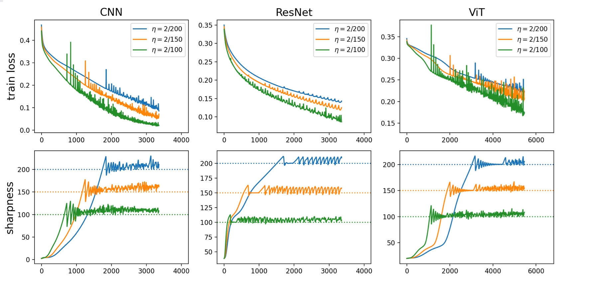

Investigating the Edge of Stability
Training a neural network means choosing a learning rate. Too small and training is too slow; too large and it diverges.
But something strange happens between these two extremes. For practical learning rates, the curvature of the loss landscape - the sharpness - slowly increases and inevitably crosses a critical threshold. At this threshold, the loss curve starts spiking erratically. Superficially, it seems like training will diverge.
And yet, it isn't. Zoom out, and the loss is still going down. The network is still learning. It has found a way to balance itself, training at what is called the edge of stability.
While neural network training is generally very difficult to analyze, it turns out we can understand several properties of this regime. In this article, we'll build up an explanation from first principles, run experiments directly in the browser, and see what this regime tells us about why certain training choices like adaptive optimizers work as well as they do.
Understanding Gradient Descent
We begin with gradient descent, and discuss modifications like SGD and adaptive gradients later. Parameters $w_i$ are updated according to
$$w_{i+1} = w_i - \eta \nabla L(w_i)$$where $\eta$ is the learning rate and $L$ is the loss. This is a simple rule, but analyzing its behavior on neural networks is not. To see this, consider the limit where $\eta \to 0$, where it becomes a continuous differential equation called gradient flow:
$$\frac{d w(t)}{dt} = - \nabla L(w(t))$$A network with 100 parameters is thus described by a 100-dimensional nonlinear differential equation where the different weight dynamics are nontrivially coupled. Analyzing this is hard even for small models with synthetic data. And this is ignoring the difficulties of nonzero learning rates, which introduce their own discretization instabilities on top of all of this.
Despite this, classical optimization theory gives us one useful foothold: if the learning rate is small enough relative to the curvature of the loss, gradient descent is guaranteed to decrease the loss at every step.[N] In other words, curvature determines how aggressively we can optimize.
Why does curvature matter? To build intuition, consider a 1D quadratic $L(w) = \frac{1}{2}Sw^2$, where $S$ controls the curvature. The update rule becomes
$$w_{i+1} = w_i - \eta S w_i \implies w_{n} = (1 - \eta S)^n w_0$$which converges to the minimum $w = 0$ only if
$$|1 - \eta S| < 1 \implies S < \frac{2}{\eta}$$If the learning rate is small relative to the curvature, gradient descent converges. If it's too large, the updates overshoot and oscillate around the minimum. If the curvature exceeds $2/\eta$, these oscillations grow, resulting in divergence.

For a multidimensional quadratic loss $L(w) = \frac{1}{2}w^\top A w$, where $A = \nabla^2 L$ is the Hessian, the update is
$$w_{i+1} = (I - \eta A)w_i$$Since all Hessians are symmetric, we can decompose $w$ along its eigenvectors. Each component $w_i^k$ (along eigenvector $k$ with eigenvalue $\lambda_k$) evolves independently, exactly like the 1D case:
$$w_{i+1}^{k} = (1 - \eta \lambda_{k})w_{i}^{k}$$Every component needs to converge, so the tightest constraint comes from the largest eigenvalue:
$$\lambda_{\max}(A) < \frac{2}{\eta}$$We call the largest eigenvalue $\lambda_{\max}(A)$ the sharpness. It controls whether gradient descent converges or diverges on a quadratic, and as we saw in the opening figure, it accurately predicts when gradient descent on neural networks starts to behave erratically. This gives us the defining condition of the edge of stability: it occurs when the sharpness exceeds $2/\eta$.

Progressive Sharpening
This quadratic analysis has led past work to suggest choosing the learning rate by first calculating the Hessian eigenvalue $\lambda_{\max}$. Setting $\eta = 1/\lambda_{\max}$ results in the fastest convergence on a quadratic, avoiding any oscillations (even those that slowly decay).
However, real loss landscapes are not quadratics. Their curvature varies over training, making this proposal impractical since it would require frequent and expensive Hessian computations to adapt to the changing curvature.
In fact, inspecting curvature over real training runs reveals an interesting trend - for many tasks, it tends to increase over time. We call this phenomenon progressive sharpening. It occurs across a large variety of tasks and models, and appears to be more pronounced for deeper networks.

While the reasons for progressive sharpening are not fully understood, the consequence is clear: most practical learning rates, which start out well behaved, will eventually reach the $2/\eta$ threshold. Learning rates that avoid this threshold are so small that training becomes impractically slow. This makes the edge of stability an inevitable part of training for any practical learning rate.
Edge of Stability and Self Stabilization
Does this mean that we need to constantly reduce our LR over time? While this is possible, it turns out some interesting things happen beyond the 2/eta threshold. You can see this for yourself in the bottom experiment
After hitting the threshold, the sharpness doesn't keep growing, but instead oscillates around the threshold. This suggests that there is some kind of self-stabilization mechanism that pushes the sharpness back down whenever it tries to grow too large.
This mechanism doesn't exist in the quadratics we used to understand the presence of the edge of stability, but it does exist in real networks. This suggests that the quadratic approximation isn't useful here, and we need to go to higher order terms. It turns out that the third order term is sufficient to explain this self stabilization mechanism.
We'll outline the argument here.
We can understand this mechanism by looking at a third order Taylor expansion of the loss, which reveals a term proportional to the gradient of the sharpness. This means that when the sharpness tries to grow, it creates a gradient signal that pushes it back down.
Other eigenvalues - here. We don't have a good theory for this - some parts of the above derivation break down.
These two effects also occur for other eigenvalues - they progressively sharpen, until they reach the threshold and self-stabilize. When multiple eigenvalues are at the edge simultaneously, the training loss becomes extremely chaotic. You'll see this in the next experiment, which tracks three eigenvalues at once.
Should we use a smaller learning rate to avoid all this instability? In practice, no — the learning rate required to stay below the sharpness throughout training would be impractically small. Networks train most compute efficiently right at the edge, making it important to understand these dynamics rather than avoid them.
Relation to Gradient Flow
Revise this. We've talked about gradient flow. We can use it to study how progressive sharpening happens.In the limit of infinitesimal learning rates, gradient descent becomes a continuous differential equation called gradient flow:
$$\frac{d w(t)}{dt} = - \nabla L(w(t))$$Gradient flow is much easier to analyze than discrete gradient descent.
It turns out gradient flow approximates finite learning rates well as long as the sharpness is below the $2/\eta$ threshold. In this regime, networks trained with different learning rates follow nearly identical trajectories in both loss and sharpness (when plotted against $\eta \cdot \text{step}$, which rescales time to account for the different step sizes). Try this in the next experiment: run three learning rates with "η·step" plotting.
Once sharpness reaches $2/\eta$, the curves diverge — each learning rate hits its own threshold at a different time, and the dynamics of EOS take over.
So how do we describe training dynamics beyond this threshold? One approach is central flow,[3] which builds on the third-order Taylor analysis we discussed earlier. The key idea is to time-average over the rapid oscillations at the edge of stability. The progressive sharpening and self-stabilization terms partially cancel, yielding a simpler description of the network's average trajectory. See this blog post for details.
Related Phenomena
Maybe we don't need this. We include the speculative details in progressive sharpening. Then here, we just discuss catapults and other optimizers. We can look through central flows and discuss the central flows ideas, and how it's important for adaptive optimizers.Although the existence of the edge of stability (from the second order Taylor expansion) and the self stabilizing effect at the edge (from the third order terms) are well established, a lot is still unknown about this phenomenon. Here, we give a brief summary of various parameters of interest, and related open questions.
To back up our claims when possible and encourage exploration, we provide settings to run in the experiment at the bottom, or provide references to existing work. Most of our settings are motivated by the observation that training with different learning rates is identical up until to the edge of stability: thus statements about initial sharpness and progressive sharpening are summarized by the sharpness curves for the largest learning rate that does not hit the edge of stability. However, we do include a number of examples at the edge of stability.
Learning Rate
In most of our experiments, we choose learning rates below the initial critical threshold and watch progressive sharpening drive the network to the edge of stability. But what happens if we start with $\eta > 2/\lambda_0$? There are two regimes: a catapult phase, where sharpness initially drops and the model still learns successfully, and a divergent phase, where the learning rate is so large that the model diverges without learning anything. [4]
Other Optimizers
Our analysis focuses on full batch gradient descent as the simplest algorithm to analyze. However, the edge of stability phenomena can be extended to other optimizers. Eg, for momentum parameter $\beta$, the critical sharpness thresholds are
$$ S_{\text{Polyak}} = \frac{1}{\eta}(2 + 2\beta), \quad S_{\text{Nesterov}} = \frac{1}{\eta}\cdot\frac{2 + 2\beta}{1 + 2\beta} $$for Polyak and Nesterov momentum respectively.[1] Note that Polyak momentum's threshold is higher than $2/\eta$, suggesting it stabilizes training at higher sharpness values. In contrast, Nesterov momentum's threshold lies between $2/\eta$ and Polyak's (since $1 + 2\beta > 1$), and is thus less stabilizing than Polyak.
Stochastic Gradient Descent
In SGD, the gradients are updated from small batches. These batches have their own loss landscapes with different sharpness values. This makes it difficult to reason about the critical threshold and progressive sharpening, since it is random each epoch and our model can randomly land in stable or unstable regions. This also naturally leads to spikes in the training loss.
Furthermore, we note the edge of stability effects are also unclear here, since existing analyses on behavior assumes that some properties remain constant in the chaotic regime (eg, second and third order derivatives).
Open Question: How does SGD affect the edge of stability behavior and progressive sharpening?
Network Width
Wide networks under the neural tangent kernel parameterization have weights that move linearly towards their final values, and as a result their Hessians do not change much. This implies very little progressive sharpening occurs, which matches empirical observations.[1]
For the maximal update parameterization (muP) which we use primarily in this demo, the relationship is unclear. For an example task, we find the width increases the degree of progressive sharpening, but this does not rule out possible counterexamples.
Open Question: How does sharpness behave in muP, where interesting dynamics occur even as width increases?
Network Depth
In general, deeper networks encounter more progressive sharpening throughout training. We include some examples here.
For more details on experiments on progressive sharpening, we refer readers to the appendix of the original paper on the edge of stability.[1]
Exploration
That's the end of the tutorial — now it's your turn! The playground below lets you adjust the model architecture, task, and training parameters and watch how the dynamics change. You can also load the pre-saved configurations from the sections above to compare runs side by side.
Try experimenting! What happens with deeper networks, or different activation functions? Can you find settings where progressive sharpening is faster or slower? Real sharpness experiments on tasks like CIFAR-10 take hours — everything here is designed to run in minutes.
Footnotes
On the Guaranteed Loss Decreases
More precisely, if $\nabla L$ is $M$-Lipschitz continuous (i.e., the curvature is bounded everywhere by $M$), then choosing $\eta < \frac{2}{M}$ guarantees monotone descent. This is a global condition — it requires a learning rate conservative enough to work everywhere in parameter space. The $\frac{2}{\lambda_{\max}}$ threshold from the quadratic analysis is a local condition: it depends on the curvature at the current iterate, which changes during training. The two thresholds coincide when the current iterate happens to be at the point of maximum curvature.
On Hessian Eigenvalue Computation
The Hessian $\nabla^2 L$ is a $p \times p$ matrix of second derivatives, where $p$ is the number of parameters. Computing it fully and solving for all eigenvalues would be prohibitively expensive. Fortunately, we only need the top few eigenvalues and eigenvectors, which is significantly easier.
The simplest approach is power iteration. Start with a random vector $v_0$ — it will almost certainly have nonzero components along every eigenvector of the Hessian. Repeatedly multiplying by the Hessian (and normalizing) amplifies each component by its eigenvalue. After many iterations, the largest eigenvalue's component dominates, and $v_{k+1} = H v_k / \|H v_k\|$ converges to the top eigenvector. Finding the eigenvectors of a large $p \times p$ matrix is now replaced by a handful of matrix multiplications.
In practice, we use a more efficient algorithm called Lanczos iteration. Rather than discarding intermediate vectors, Lanczos retains the full history of vectors produced during each Hessian-vector product. This history can be used to more accurately obtain multiple top eigenvalues and eigenvectors. We run 20 Lanczos iterations, which can in principle recover up to 20 eigenvalues — though accuracy degrades for the smaller ones.
Note we never need the full Hessian matrix — only Hessian-vector products $Hv$. Since the Hessian is the Jacobian of the gradient, the product $Hv$ can be rewritten as a directional derivative of the gradient:
$$Hv = \lim_{\varepsilon \to 0} \frac{\nabla L(w + \varepsilon v) - \nabla L(w)}{\varepsilon}$$This requires only two gradient evaluations rather than computing all $p^2$ entries of $H$. Our implementation approximates this with finite differences at $\varepsilon = 10^{-5}$:
$$Hv \approx \frac{\nabla L(w + \varepsilon v) - \nabla L(w - \varepsilon v)}{2\varepsilon}$$This is computationally cheap and avoids second-order backpropagation. However, this produces issues with ReLU where the choice of $\varepsilon$ can cause spurious spikes due to the non-smoothness of the activation.
References
- Cohen, J., Kaur, S., Li, Y., Kolter, J.Z., & Talwalkar, A. (2021). Gradient Descent on Neural Networks Typically Occurs at the Edge of Stability. ICLR 2021. arXiv
- Damian, A., Nichani, E., & Lee, J.D. (2022). Self-Stabilization: The Implicit Bias of Gradient Descent at the Edge of Stability. ICLR 2023. arXiv
- Cohen, J.M., Damian, A., Talwalkar, A., Kolter, J.Z., & Lee, J.D. (2024). Understanding Optimization in Deep Learning with Central Flows. arXiv
- Lewkowycz, A., Bahri, Y., Dyer, E., Sohl-Dickstein, J., & Gur-Ari, G. (2020). The Large Learning Rate Phase of Deep Learning: the Catapult Mechanism. arXiv